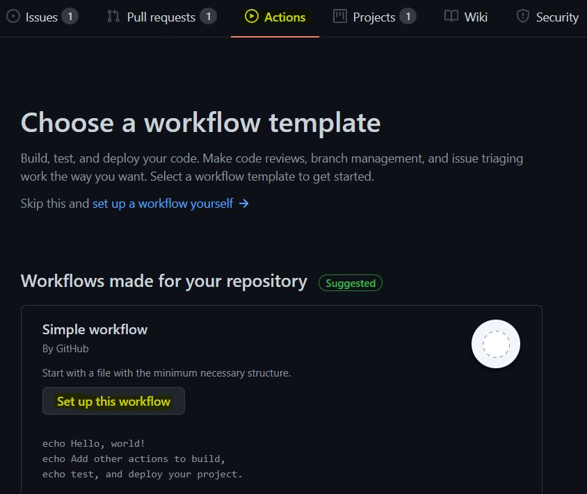
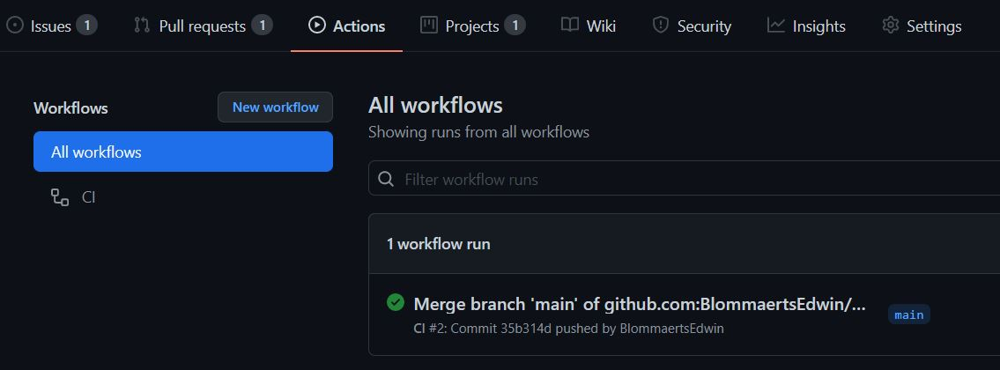

I had previously already added unit tests to my game. There’s already a fair few youtube videos and guides out there describing how to do this. What I wasn’t aware of is that it is actually particularly easy to setup godot automated testing (GUT) upon pushing code into github using github actions.
- Log into you github account and create a new action workflow.

-
Then add the following at the bottom of the blank.yml file.
- name: godot-tester # You may pin to the exact commit or the version. # uses: croconut/godot-tester@8138293929bde928c05dde776b66ca50661ff4ee uses: croconut/godot-tester@v2.1a with: # Your Godot version number e.g. 3.2.2 version: 3.2.2 # Give relative path to your project.godot, if not in top level of repo, # the test runner will search here for your /test directory which # contains the unit tests. path: ./ # Test against mono version? Default: false is-mono: false # How long to spend on importing assets, don't set if testing is not required import-time: 1 # How long the test should be run before it's timed out and fails test-timeout: 300 # Decimal value for minimum passing score e.g. if 88% of tests pass and minimum-pass is 0.8, then action passes. minimum-pass: 0.99 -
Then commit the file and check the action menu.
